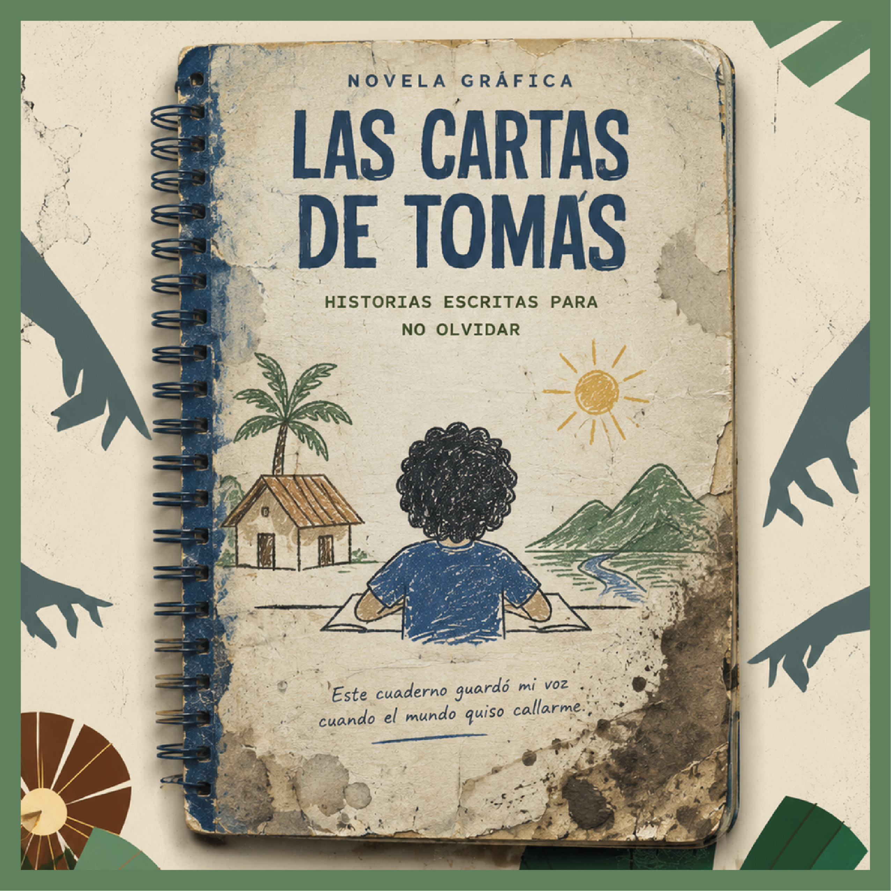
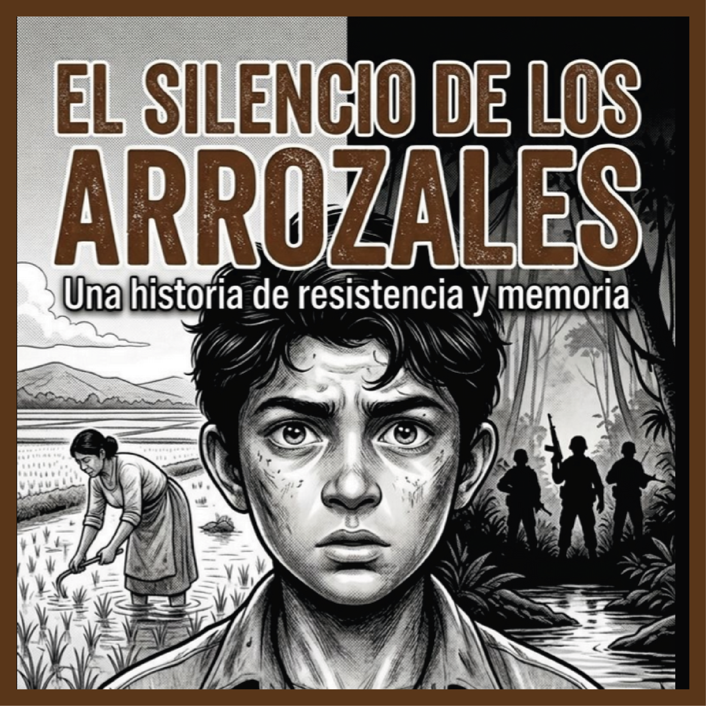
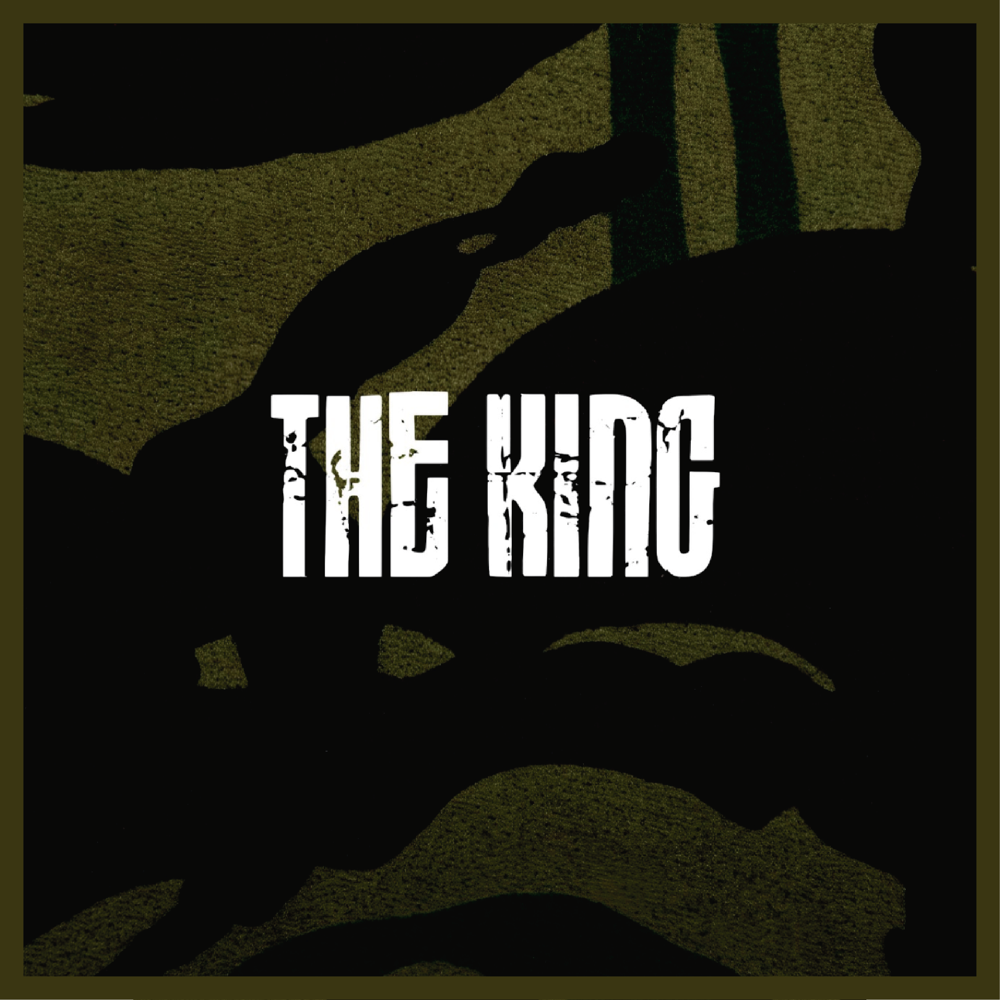
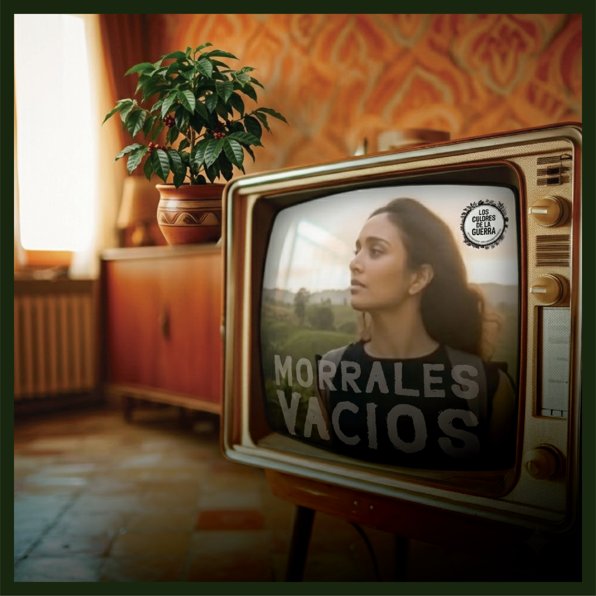
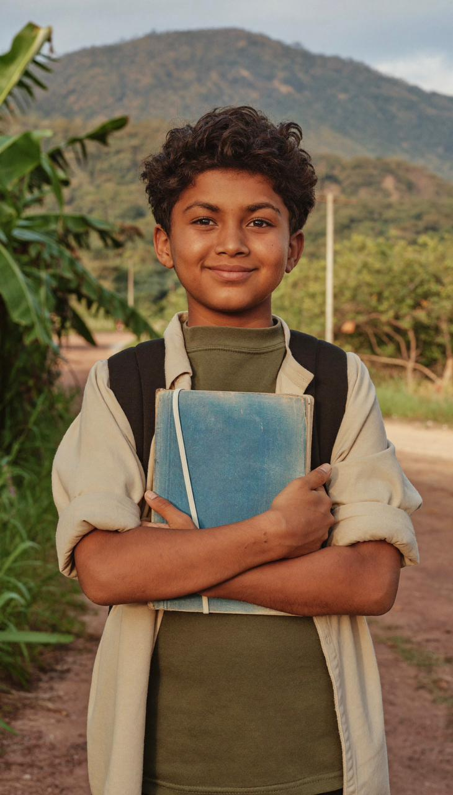
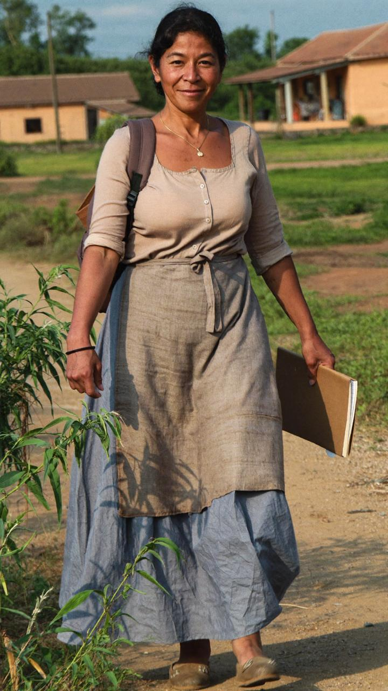
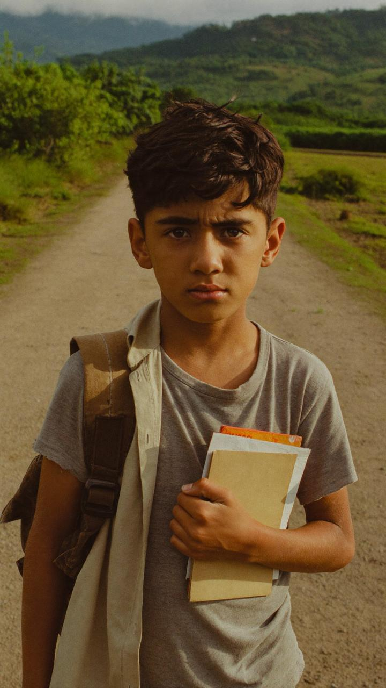

Inicio / Historia
Cada relato es una entrada distinta a la misma realidad. Se pueden leer por separado, pero se enriquecen juntos.

Novela gráfica · Obra seminal
Personaje central Tomás Herrera Suárez · 13 años
El martes 2 de febrero de 2022 amaneció lloviendo en Vistahermosa, Meta. Sus hermanos estaban enfermos, pero Tomás Herrera Suárez, de 13 años, insistió en ir al colegio solo. Esa tarde no regresó. Un retén ilegal de las disidencias de las FARC lo interceptó en el camino y lo subió a una camioneta junto a otros veinte niños reclutados ese día.
Su profesora, Diana Ospina, le había regalado esa mañana un cuaderno azul para que escribiera todo lo que le generara curiosidad. Tomás lo guardó en su mochila. Esa misma tarde se lo confiscaron. Meses después lo recuperó como recompensa por haber alertado al campamento de la presencia militar. A partir de entonces lo escondía dentro de su uniforme y por las noches, en guardia, lo sacaba para escribirle cartas a su mamá con una linterna pequeña. Cartas que nunca saldrían del campamento. Cartas que se convirtieron en su única forma de recordar que todavía era él.
Tres años después, Tomás escapa en medio de un operativo fallido, se entrega al Ejército en un cafetal del Meta y llega a Bogotá con el cuaderno azul lleno. Con el tiempo estudia Derecho, escribe un libro basado en esas cartas y trabaja con una fundación de víctimas del conflicto. Esta es la historia seminal del universo.
Instagram · YouTube
Ver el producto →
Cómic Interactivo
Personajes Luz María Suárez y Raúl Herrera
Luz María Suárez y Raúl Herrera eran arroceros en Vistahermosa. El día que se llevaron a Tomás, Raúl llegó del jornal empapado de lluvia y quiso ir al campamento a reclamarlo, machete en mano. Luz María lo atajó de la camisa. La vecina, doña Mercedes —que ya había perdido un hijo— les advirtió: "Si usted va allá, el patrón no le devuelve al mijo y nos pone la lápida a todos".
Luz María lavaba la ropa de Tomás cada ocho días aunque estuviera limpia. La fregaba, la ponía al sol, la doblaba y la acomodaba en su cama con el olor al jabón que a él le gustaba. Raúl se volvió una sombra, trabajando sin parar para no tener que hablar de la falta que les hacía el muchacho. En 2025, cuando Tomás llama desde Bogotá, la familia debe huir del Meta. Se reubican en Medellín, donde montan una tienda y papelería con los recursos de la reparación.
Narrada a través de un cómic interactivo donde los usuarios exploran la historia, toman decisiones y descubren fragmentos del diario de Tomás para vivir la espera desde adentro.
Genially
Ver el producto →
Shorts Animados
Personaje Joaquín, alias "The King" · 15 años
Joaquín creció en el Valle del Cauca, hijo de una jornalera de trapiches y de un hombre que nunca conoció. Cuando descubre que ese hombre fue alias "El Paisa" —comandante guerrillero asesinado en 2021—, entiende que ingresó voluntariamente a la misma estructura que destruyó a su madre. Dentro del campamento lo llaman "The King": es el recluta más obediente, el que nunca llora, el que nunca pregunta. Pero no es fuerte porque no siente miedo; es fuerte porque enterró su nombre para seguir vivo.
Cuando Tomás llega al campamento, Joaquín lo observa escribir de noche con una linterna. Nunca aprendió a leer. Poco a poco Tomás le enseña las letras. Joaquín escapa con Tomás en el operativo de mayo de 2025, pero ya tiene 18 años: el Estado no lo trata como víctima. Muere en La Modelo tres meses después. Antes de morir le escribe a su madre una carta llena de errores de ortografía —aprendió a escribir tarde, gracias a Tomás.
Facebook · TikTok
Ver el producto →
Audiorelatos · Podcast
Personaje Efraín, alias "El Flaco"
A finales de los años 80, en las faldas del Caquetá, Efraín no soñaba con fusiles: quería ser caficultor como su padre, don Gildardo. Una madrugada de 1988, paramilitares entraron a su finca, usaron las páginas de su libreta de cuentas para prender el fuego, quemaron la casa y mataron a su padre en el patio donde secaban el grano. Efraín tenía once años. Huyó con su madre selva adentro, donde fueron recogidos por las FARC.
Décadas después es "El Flaco", comandante de la columna 25. El día que Tomás llega al campamento con su cuaderno azul, Efraín siente un pinchazo en algo que creía muerto: su pasado entre los cafetales. Lo recluta para borrar esa mirada pura. Años más tarde, solo y consumido por la vejez, llega a sus manos un libro de portada azul titulado Las cartas de Tomás. Al abrirlo se encuentra con una versión de sí mismo en las páginas.
YouTube · Spotify
Ver el producto →
Novela Vertical · WhatsApp
Personaje Diana Ospina · Profesora · 30 años
Diana Ospina, oriunda de Villavicencio, llegó a la escuela rural Nuestra Señora del Carmen en Vistahermosa hace cinco meses como parte de un programa de educación popular. El martes 2 de febrero de 2022 veinte de sus estudiantes no llegaron a clase. Para el final del día ya sabía que los habían reclutado. Entre ellos estaban Tomás y Sebastián, hijo de Miriam, una enfermera del pueblo.
Diana no se queda quieta: negocia con comandantes armados, abre su escuela a los hijos de combatientes, visita familias cada viernes con su carpeta de nombres y fechas. Tres años después de la desaparición de Tomás, se reencuentra en un centro de desmovilización con alias El Cachaco —que ahora es un excombatiente en reinserción— y él le da la noticia: Tomás escapó. Ella cierra los ojos, abre la mano y mira el separador de libros con pegatinas de carritos que Tomás dejó un día sobre su escritorio.

Periódico interactivo con AR
Personajes José y Eva Herrera Suárez · Hermanos de Tomás
Mientras Tomás escribía cartas que nunca salían del campamento, sus hermanos José (10 años) y Eva (8) le escribían cartas que nunca enviaban desde casa. José las guardaba en una caja de zapatos bajo su colchón; Eva empezó con dibujos —la finca, los cuatro juntos, Tomás en una jungla de colores— y aprendió a escribir mientras esperaba. Cuando Tomás regresa en 2025, la primera noche José le entrega la caja sin decir nada: "Te las escribí. No supe cómo enviártelas." Al leerlas, Tomás entiende que su historia no era solo suya. Esa noche decide que su cuaderno azul se convertirá en un libro.
También hay una guerrillera de 22 años, Valentina, que nunca supo que guardaba el cuaderno de Tomás y murió antes de devolvérselo. Sin ella el cuaderno no habría sobrevivido. El lector encarna al adulto indiferente que, al explorar el periódico impreso y escanearlo con su teléfono, descubre en realidad aumentada todo lo que la tinta sola no podía contar.
Impreso · Web AR
Ver el producto →Personajes del universo

Protagonista · 13 años
Reclutado en Vistahermosa, Meta, el 2 de febrero de 2022. Escribe cartas en su cuaderno azul por las noches, en guardia, con una linterna escondida. Sale en 2025, estudia Derecho y escribe un libro.

Mamá y papá de Tomás
Arroceros de Vistahermosa. Raúl quiso ir al campamento con el machete; Luz María lo atajó. Ella lavó la ropa de Tomás cada semana aunque estuviera limpia. Hoy tienen una papelería en Medellín.

El antagonista ambiguo
15 años, hijo de alias "El Paisa". Entra voluntariamente a la guerrilla buscando venganza. Tomás le enseña a escribir. Escapa con él en 2025. Muere en La Modelo con una carta llena de errores de ortografía.

El comandante
Efraín, alias "El Flaco". Vio morir a su padre en 1988 cuando tenía 11 años. Décadas después recluta a Tomás. En su vejez, una copia del libro de Tomás llega a sus manos y se encuentra con una versión de sí mismo.

La maestra que no calló
30 años. Le regaló a Tomás el cuaderno azul la mañana que lo reclutaron. Negocia con comandantes, abre su escuela a los hijos de combatientes y nunca suelta el separador de libros que él dejó en su escritorio.

La familia · La que buscó
José guarda cartas en una caja de zapatos. Eva empieza con dibujos. Valentina, una joven guerrillera de 22 años, esconde el cuaderno azul en el campamento sin saber por qué, salvando la historia.